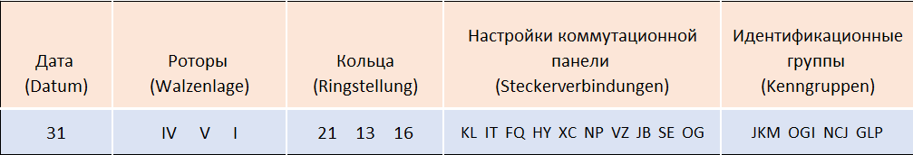

Процедура шифрования:
Для шифрования использовался ключ дня, который состоял из следующих пунктов:
1. Дата – день месяца, на который действителен ключ;
2. Диски – три номера дисков, которые занимают позиции 1, 2 и 3 соответственно;
3. Кольца – настройки колец на соответствующих дисках. Кольцо определяло, в какой позиции диск «передаст» вращение соседнему диску;
4. Настройки коммутационной панели – пары разъемов, соединенных кабелями;
5. Идентификационные группы – используются для выработки буквенной идентификационной группы.

Порядок настройки по ключу дня:
1. Выбор набора и порядка дисков
2. Установка колец в нужные положения
3. Установка кабелей коммутационной панели
4. Выбор идентификационной группы (одной из 4 по 3 буквы в каждой)
5. Выработка буквенной идентификационной группы – 2 случайные буквы + идентификационная группа из ключа дня
Также использовался одноразовый ключ, который до 1940 г. выбирался по такому принципу:
• Выбирается произвольный ключ из 3 букв (ориентация шифровальных дисков) – например, GHK;
• Выбранный ключ шифруется дважды на ключе дня, что приводит к сообщению XMC FZQ;
• Шифровальные диски устанавливаются в позицию GHK;
• Осуществляется шифрование сообщения.
Но уже после 1940 г. процесс изменился:
• Выбирается случайная стартовая позиция, например WZA;
• Выбирается произвольный ключ, например, SXT;
• Диски устанавливаются в позицию WZA и выбранный ключ зашифровывается как сообщение, например, получая результат UHL;
• Диски устанавливаются в позицию SXT;
• Осуществляется шифрование сообщения;
Итоговый вид сообщения:
1230 = 3tle = 1tl = 250 = WZA UHL =
JKGLP SQTGS ABTRQ PTWYB LENDP
Сообщение отправлено в 12:30 = Состоит из 3 частей(3 teile) = Это первая часть сообщения(1 teil) = Она состоит из 180 символов = Стартовая позиция + ключ сообщения = Идентификационная группа